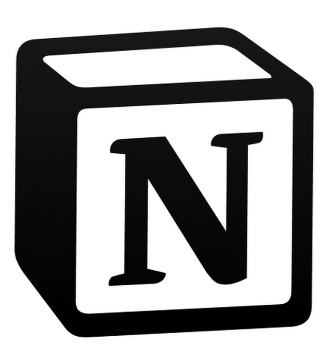

Notion es una herramienta de software de productividad y gestión de proyectos que se utiliza para la organización y colaboración de tareas y proyectos. Ofrece una plataforma todo en uno que combina notas, bases de datos, listas de tareas, calendarios, tableros Kanban, y otras herramientas de productividad en un solo lugar. Los usuarios pueden personalizar su espacio de trabajo y crear páginas para proyectos individuales, tareas, objetivos personales y más. Notion es una herramienta muy flexible y puede ser utilizada tanto por individuos como por equipos.
